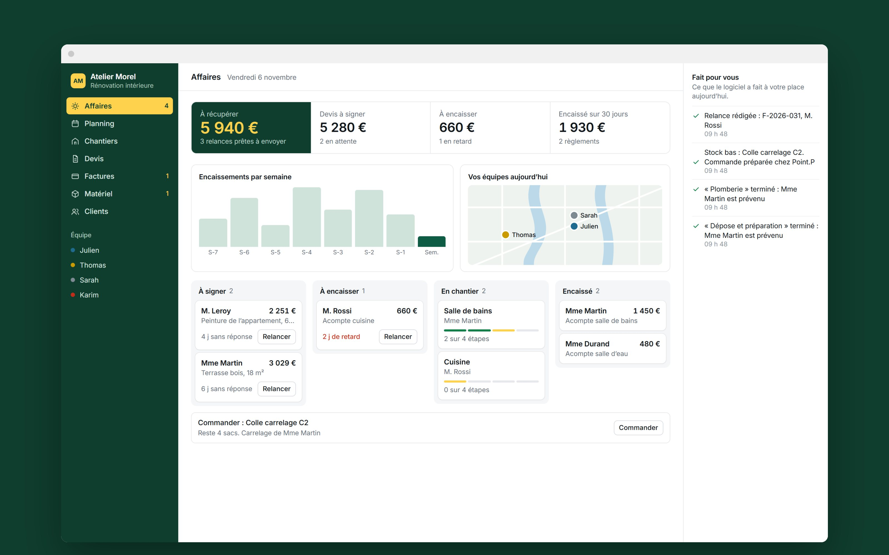

Vos devis restent sans réponse.
Le logiciel repère ceux à relancer et rédige le message.Logiciel de gestion et site internet pour artisans du bâtiment
Vos devis, vos relances et vos chantiers au même endroit, pour libérer vos soirées de l’administratif.
Essayer le logiciel
Ce que cela change
Vos clients appellent pour savoir où en est leur chantier.
Ils suivent chaque étape sur leur téléphone.Vous courez après les acomptes.
Votre client signe et règle son acompte en ligne.Ce que nous pouvons créer
- Devis signés sur téléphone
- Factures et acomptes
- Planning des équipes
- Suivi de chantier pour vos clients
- Relances préparées
- Site internet avec demande de devis
Questions fréquentes
Dois-je changer ma façon de travailler ?
Non. L’outil est construit autour de votre façon de travailler et de vos documents actuels.
Puis-je utiliser le logiciel sur un chantier ?
Oui. Il fonctionne sur téléphone, sur tablette et sur ordinateur.
Faut-il payer un abonnement ?
Aucun abonnement n’est imposé. Si un service extérieur est nécessaire, son coût vous est annoncé avec le prix.
Parlons de votre activité.
Le premier échange est offert. Vous recevez ensuite un prix fixe par écrit sous 48 heures.
Parler de mon projet